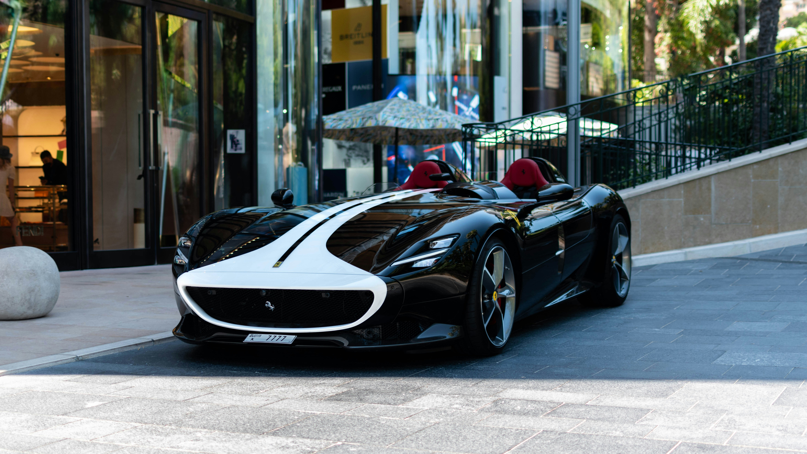

About Us

Bugatti, an illustrious name deeply entrenched in the annals of automotive history, epitomizes the pinnacle of luxury, craftsmanship, and performance. Founded by the visionary Ettore Bugatti in 1909, the brand swiftly ascended to the zenith of automotive engineering and design. Its inception marked the dawn of a new era, where innovation and elegance converged to redefine the very essence of driving. From its humble beginnings in Molsheim, France, Bugatti embarked on a journey marked by audacious ambition and unwavering dedication to excellence. The legacy of Bugatti is a tapestry woven with threads of groundbreaking achievements, from the revolutionary Bugatti Type 35, which dominated motorsport circuits in the 1920s, to the awe-inspiring modern marvels such as the Veyron and Chiron, which continue to captivate enthusiasts and aficionados alike with their unparalleled performance and breathtaking design.
At the heart of Bugatti's ethos lies an unwavering commitment to perfection, where every component is meticulously honed to achieve automotive nirvana. Each Bugatti model is a testament to the brand's relentless pursuit of excellence, blending state-of-the-art technology with artisanal craftsmanship to create automotive masterpieces that transcend mere transportation. Every curve, every contour, and every stitch is meticulously crafted to evoke emotions and stir the soul. The Bugatti experience extends beyond the realm of driving; it is a symphony of sights, sounds, and sensations that transport enthusiasts into a realm where dreams merge with reality. Behind the wheel of a Bugatti, one embarks on an exhilarating journey, where every moment is imbued with a sense of awe and wonder, and every drive is an adventure waiting to unfold.

Beyond its exquisite cars, Bugatti embodies a lifestyle defined by opulence, exclusivity, and sophistication. The Bugatti ownership experience is a gateway to a world of unparalleled luxury, where discerning clientele are immersed in a realm of bespoke craftsmanship and personalized service. From tailor-made customization options that cater to the most discerning tastes to exclusive events and experiences that transcend the ordinary, Bugatti offers its clientele a passport to a life of luxury without limits. Whether attending VIP gatherings at prestigious venues or embarking on bespoke driving tours through scenic landscapes, Bugatti owners are afforded opportunities to indulge their passions and create memories that last a lifetime. In the realm of Bugatti, ownership transcends mere possession; it is a privilege reserved for those who dare to dream big and embrace the extraordinary.